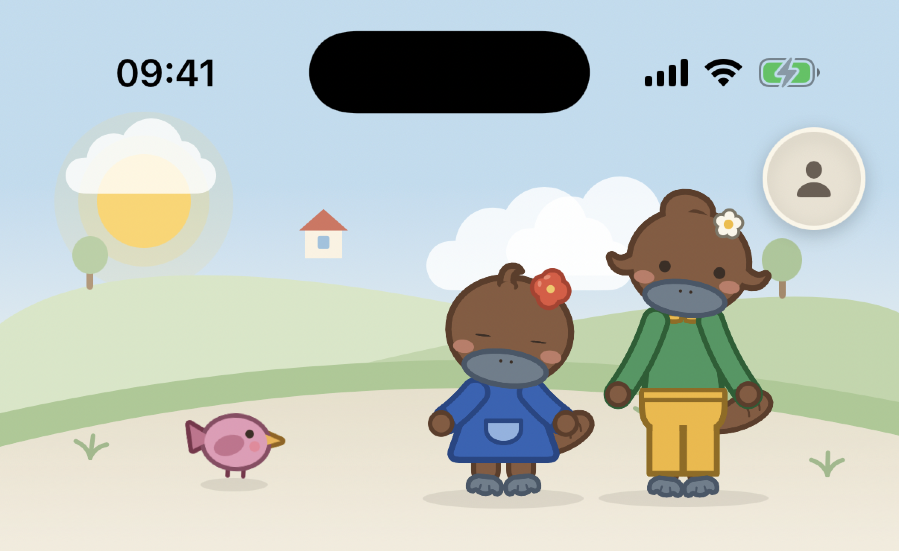
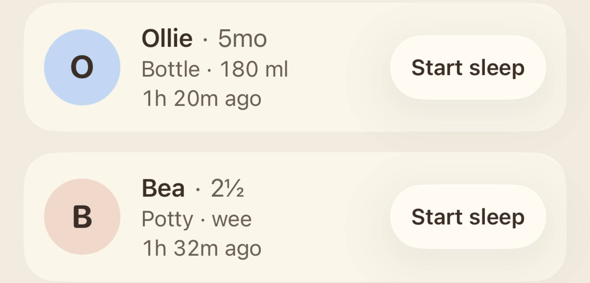
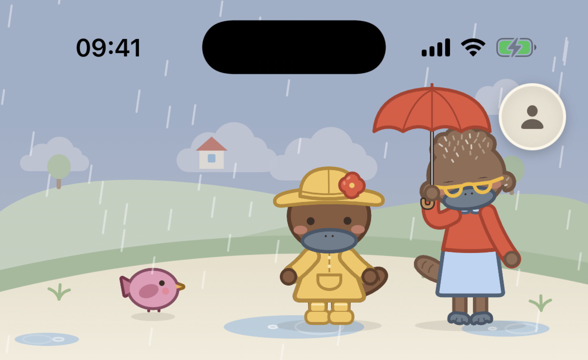
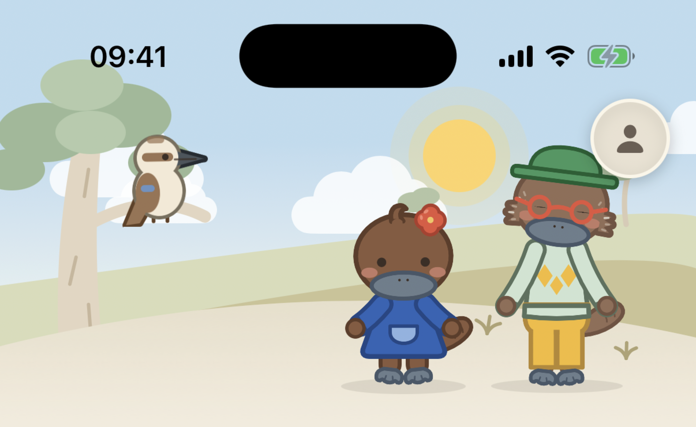

0Welcome

Baby tracker for the whole family
As now, plus one line that sets expectations, and the invite route always visible.
1Logging


Feeds, sleeps, nappies and the potty. One hand is enough.
Kept, with the real tiles under it. Puggle is doing something, not standing.
2Every child


A baby and a toddler side by side. Sleep timers run for each.
New. This is what sets Puggle apart, and today's flow never shows it.
3Together


Invite a partner, Nan or a carer. You choose what each can do.
Replaces the text-only page. The list shows who logged what.
4Looking back


Totals and patterns, when you want them. Never a score.
Kept, with the real chart.
5Calm and private

After dark everything dims and slows. Your entries stay on your iPhone and in your iCloud. No account, no ads.
How your data is kept
New. Puggle's day follows yours, and the privacy promise gets a picture.